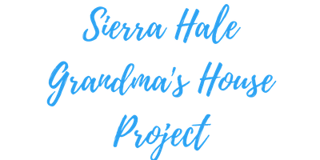

Working with Majestic Nomad was an amazing experience. I loved that we could bounce ideas back and forth with great ease and implement them immediately.
The very first post for social media had double the customer interaction that past posts had gained! Having Majestic Nomad as an extra set of hands really took the pressure off of me when organizing my sites and posts. It allowed me the time I needed to concentrate on my customers and their needs.
I still have great ideas that I received working with Majestic Nomad that I have been using every day and I highly recommend this amazing company for all your social media needs. I will absolutely be using their services again and again!
Samantha has been managing my business Twitter for a few months now, and I have been very impressed with her work. She is a dedicated worker, often going above and beyond her scope of duties. Samantha’s responses to comments are thoughtful and engaging, she posts regularly and consistently, and works well on her own with minimal oversight. It is clear how dedicated Samantha is to her work, so much so that she keeps an eye on social trends to ensure she stays up to date with any changes. I have no hesitation in recommending Samantha as a Social Media Manager. She would be a great asset to any team.
The time I have spent working with Samantha and Majestic Nomad has seen me through the beginning of a small social media following, by growing both my Instagram and Facebook presence, and creating content that is consistant and clear. Samantha's talent and skill has truly shined in her work with my business, and I am so happy to be partnered with someone who has a true understanding of my brand, business, and vision.
With the help of Majestic Nomad's professional social media management skills, Grandma's House Project was able to get off the ground and become known across Facebook, in both groups and with individual users. Samantha sat down with us and showed us how to set up and run both of our Facebook pages, as well as provided help with promotional ads, posting to others' pages, and showing us which demographics were more likely to view our page.
Samantha answered questions we had about posting as our business, setting up photo albums, and presenting individual items. Overall, she is very professional and kind, and we would love to do business with Mojestic Nomad in the future.
